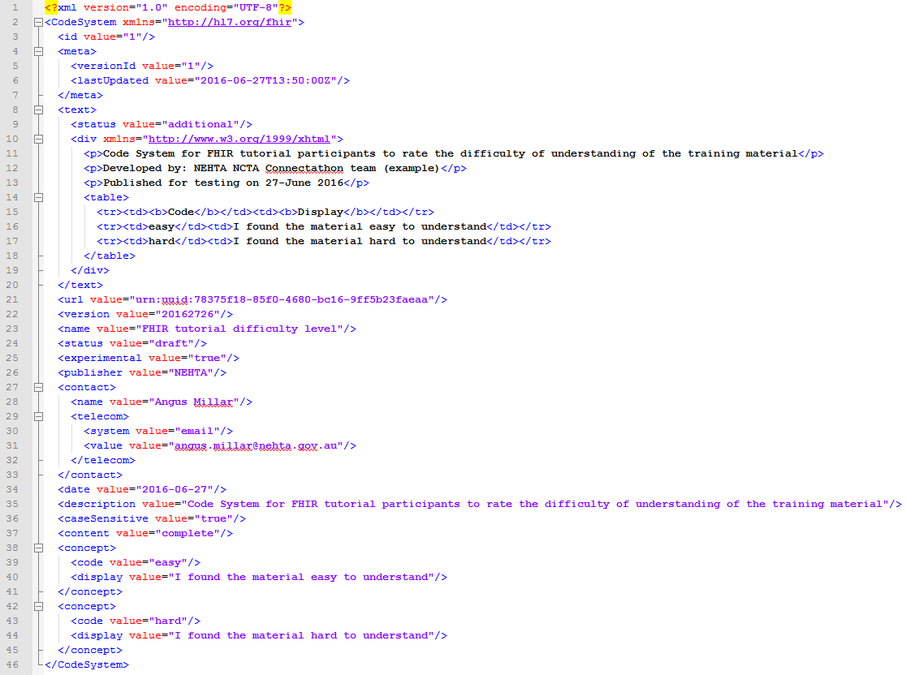
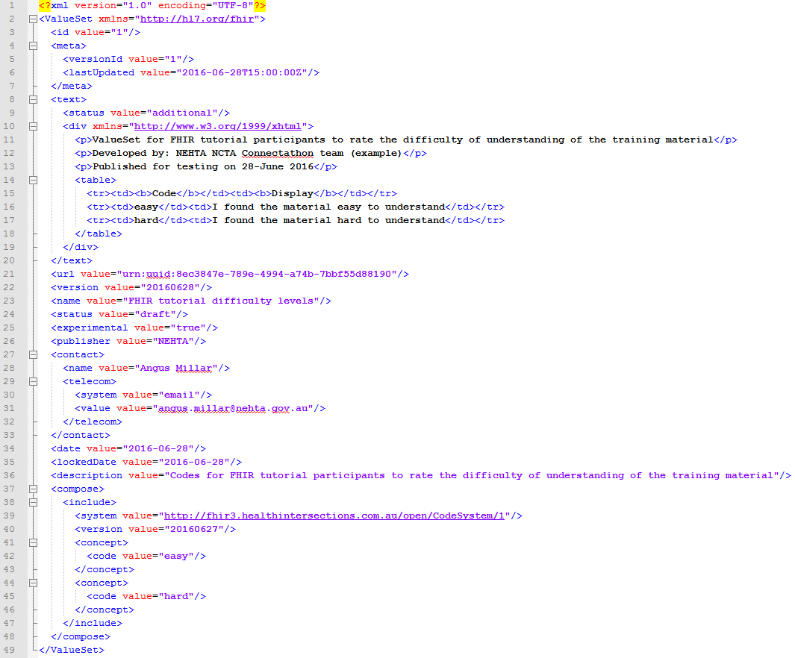
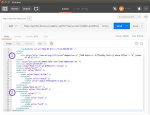

ValueSet and CodeSystem
This tutorial will cover the basics of the ValueSet and CodeSystem resources which are two of the three key resources for working with terminology within FHIR, with the other one being ConceptMap.
Contents
Step 1: What are ValueSets and CodeSystems Step 2: CodeSystem the FHIR Resources Step 3: ValueSet the FHIR Resources Step 4: Understanding how ValueSet codes are used Step 5: Creating ValueSets using filters (Include, Exclude and Filter) Step 6: Using the $expand operationStep 1: What are ValueSets and CodeSystems
In Healthcare, we use many codes from many different sets of codes. We have relatively simple ones like patient gender and more complex ones such as allergies and adverse reactions and more clerical ones like facility codes or billing codes. FHIR cannot define every required code and code set for every Healthcare system across the world. Instead, FHIR provides a mechanism to manage the codes and code sets and that mechanism is a CodeSystem and ValueSet.
FHIR's CodeSystems and ValueSets work hand in hand to manage terminology in FHIR. The two are so closely tied that in the early versions of FHIR they were actually one resource. Yet since the STU3 version of FHIR, they have been separated. Here we will first explain the concepts behind CodeSystem and ValueSet and later we will look at the FHIR resources that embody them.
It is best to start by explaining CodeSystem as it is the basis that ValueSets are then created from. You can think of a CodeSystem as being a master catalogue of a particular set of codes. It is the totality of all the codes in a system. That system may be SNOMED-CT or LOINC or even a system you create for yourself. Let's use an analogy to help explain.
I love Allen’s lollies. Let’s imagine that each different lolly is a code. We have RipeRaspberries, Pineapples, MilkBottles, Snakes and all of the other Allen’s lollies. If we listed the entire catalogue of Allen’s lollies with a description for each, the date the list was put together, the lists publisher details and more then this would be the CodeSystem.
The CodeSystem does not get used by the consumers, it is just the reference catalogue for all Allen’s lollies, so if you want to find out more about the code 'RipeRaspberrie' then you would go to the CodeSystem. What a consumer uses is a ValueSet, because a ValueSet adds value to the consumer. In our lolly analogy, the ValueSet is the packet of lollies you buy, like the Party Mix or the bag of lollies you choose because they're your favourites. This is a ValueSet because it serves a purpose. It is a selection of codes from the CodeSystem to be used for a purpose.
A ValueSet is not limited to a single CodeSystem just as our bag of lollies is not limited to Allen's lollies. I'm also quite fond of Smarties, but only Red and Blue ones, from the Smarties CodeSystem, and also a few RedSkins from the Wonka CodeSystem. All of these can go into my same lolly bag which is a single ValueSet.
Next, we will look at the FHIR resources used for these concepts which are also named CodeSystem and ValueSet.
Step 2: CodeSystem the FHIR Resources
Let's take a closer look at the FHIR resource named CodeSystem, you will find the resource page in the FHIR specification here:
Below is a simple example of a CodeSystem FHIR resource
The example below only contains two codes 'easy' and 'hard'. What is important for you at this stage is to grasp the basic structure of the resource. Notice that the top section (lines 8 to 20), like all FHIR resources, is a narrative HTML representation of the CodeSystem. The middle section (lines 21 to 37) is all the metadata about the CodeSystem, things like the version, a name and description for the CodeSystem, its status, whether it is experimental or not, who is the publisher and whether the codes are case sensitive. The last section (lines 38 to 45) are the actual codes each in their own <concept> element.
Don't forget, the CodeSystem is a catalogue of codes to be selected in ValueSets.

This example does not show every property of a CodeSystem resource. I've only used the ones I thought were key while also trying to keep the example nice and short. Take a look at CodeSystem in the FHIR specification to see all the properties available.
Step 3: ValueSet the FHIR Resources
Let's take a closer look at the FHIR resource named ValueSet, you will find the resource page in the FHIR specification here:
Here below a simple example of a ValueSet FHIR resource
This ValueSet selects codes from the CodeSystem example we looked at in Step 2. Notice that this ValueSet selects both the 'easy' and 'hard' codes from the CodeSystem, although it is free to pick and choose which ever codes it requires from the CodeSystem, it could even select more codes from another CodeSystem if required.

Remember, a ValueSet is a grouping of codes, codes are taken from CodeSystems, to be used for a purpose. ValueSet codes adds value to some use case, for example: a clinical systems drop down box to select an allergy.
Once again you should go to the FHIR specification page for ValueSet to see the full list of properties available.
Question: If you had two copies of a ValueSet resource given to you, from different people, how would you determine that the two instances were actually the same ValueSet?
CSIRO's SnapperSnapper is an online tool developed by the CSIRO team that created the ONTO FHIR Terminology server. The tool provides a friendly user interface for creating and editing FHIR CodeSystems, ValueSets and ConceptMaps rather than having you fiddle with XML or JSON. Your finished resource can then be downloaded locally or published directly into an FHIR server of you choosing. This free tool can be found here: Snapper BETA
{kind=link}
Step 4: Understanding how ValueSet codes are stored
It is easy to fall into the trap of thinking that the code information you list in a ValueSet will be exactly the same code information used when a ValueSet is called upon by a system. This isn't the case, however, as the codes stored in a ValueSet actually belong to a CodeSystem - a valueset instance only contains the 'links' to the actual codes in a codesystem. Thus when a codesystem's codes are updated, the valuesets containing updated codes will contain the updated codes automatically. This is demonstrated well by one of the primary uses of a ValueSet: getting a list of codes to present to a user as specified by the links in the valueset, this is done with a special operation on the FHIR Terminology Server called '$expand'. This is known as ValueSet Expansion or ValueSet enumeration.
We are not going to go into how to perform an expansion now (see step 6 for that), but you do need to know what happens in the FHIR Terminology Server when an expansion is performed as it is key to your understanding.
As seen in this first diagram (you can click to enlarge) a developer calls the '$expand' operation on a given ValueSet because they want the list of codes and descriptions to display to a user. As we have seen, the ValueSet has a list of codes and it know the CodeSystems for each code.
{kind=link}
The FHIR terminology server does not just return the codes in the ValueSet, what it does is reference the CodeSystems as listed for each code in the ValueSet and retrieves the information about the code from the CodeSystem resource in real-time and returns this back to the developer as an expanded ValueSet.
{kind=link}
What this means is that the ValueSet is only a reference to the codes in the CodeSystem. A key point here is that if the code description was updated in the CodeSystem then a ValueSet expansion will pick up the new description even though the ValueSet was never modified. You can control this using the 'lockedDate' property of a ValueSet. If a lockedDate is given in the ValueSet then only the CodeSystems as of this date will be used, any later version of the same CodeSystem will not be used when ValueSet Expansion is performed. For more information about lockedDate refer to the FHIR specification here: lockedDate.
Step 5: Creating ValueSets using filters (Include, Exclude and Filter)
In the previous 'Step 4: Understanding how ValueSet codes are used' we learnt that ValueSets only select codes from CodeSystems. In our simple ValueSet example we selected, or rather 'Included', our codes by stating the actual code values 'easy' and 'hard' as they were seen in our CodeSystem. Yet, there is another way to select codes for inclusion in the ValueSet which is by using a filter.
We will avoid deep diving on filters but it is worth noting they exist and can be used. Typically a filter would be used when the code system being used has a hierarchical structure, meaning each code can have a parent or children codes such as the LOINC code system or even poly-hierarchical where codes can have many parents and many children codes such as SNOMED-CT.
{kind=link}
With hierarchical code systems, we can use a filter to say "include all codes under this parent code". This way, as new codes are introduced under a parent code, in the code system, they will automatically be included in our ValueSet's selected codes. In the very same way we can include codes, we can also exclude codes either by stating the code to exclude or by using another filter.
The image below is taken from the ValueSet tree structure in the FHIR specification and highlights the sections that deals with the topic discussed in this step (Include, Exclude & Filter).
{kind=link}
Step 6: Using the $expand operation
As introduced in step 4, the $expand operation allows you to retrieve the full listing of codes available in a valueset, which makes sense if you consider the possible dynamic nature of valuesets given the filters introduced above in step 5. Following on from the introduction to Operations, upload the valueset with the 'easy' and 'hard' codes to a FHIR server:
The resource will be available for viewing in Postman or your browser under this URL:
As described in the Operations tab, every resource has an 'Operations' tab, including ValueSet, which is where you'll find the $expand operation. There are two ways you can use the operation - either on the ValueSet resource type:
[Service Root URL]/[Resource Type]/$expand
in which case you'll need to provide the id of the valueset to expand as an 'identifier' parameter, or you can use the operation on a ValueSet instance, where the id of the resource is provided in the URL:
[Service Root URL]/[Resource Type]/[Resource Id]/$expand
Try entering /$expand into Postman - and you'll receive an expanded ValueSet resource:
{kind=link}
There are two things of interest here: 1) the narrative of the resource, where you can clearly see that this is an expansion of a valueset, and 2) the expansion of codes itself, where you can see that all the codes are listed under the 'expansion' element instead of the 'compose' element as you would when you're creating your valueset. While the 'compose' element can list both the filters or full list of codes that compose the valueset, the 'expansion' element will always list the full set of codes in the valueset.
The 'expansion' element in the spec allows for containment of the parameters that controlled the expansion, the expanded codes themselves, and some metadata such as the timestamp of the expansion and the offset where the expansion should start.
You can also control the expansion by applying parameters to it. The filter parameter, for example, allows you to filter the codes by text - if you try entering /$expand?filter=easy into Postman, you'll see that just one code is returned then, and that is the 'easy' one.